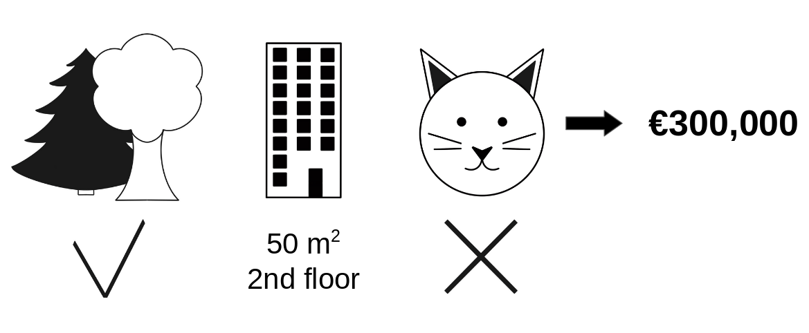
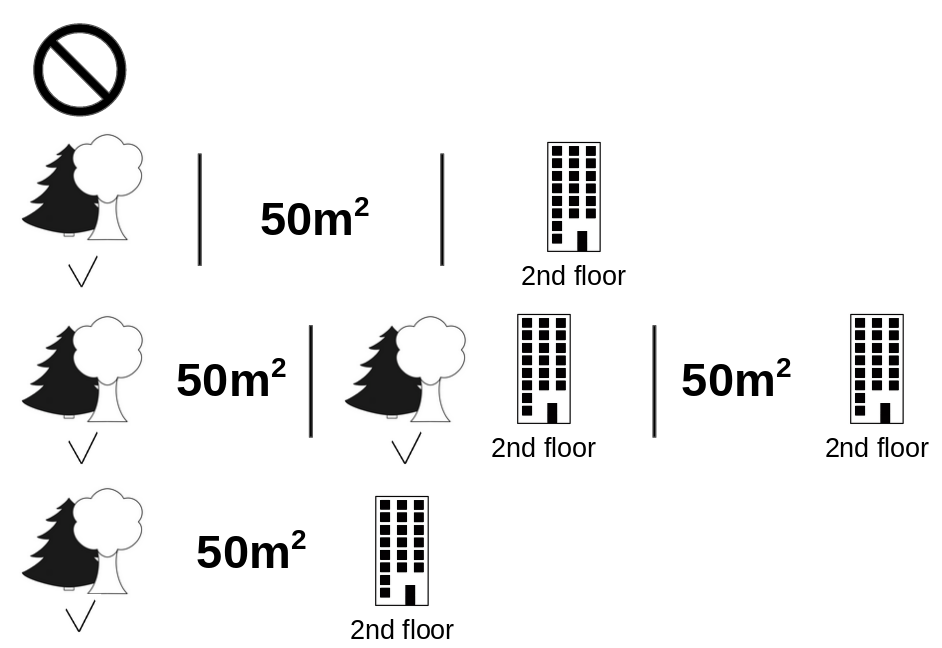
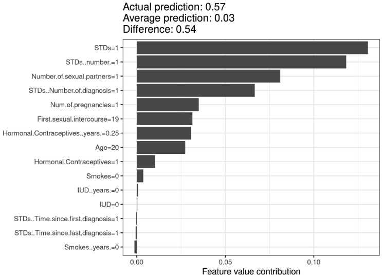
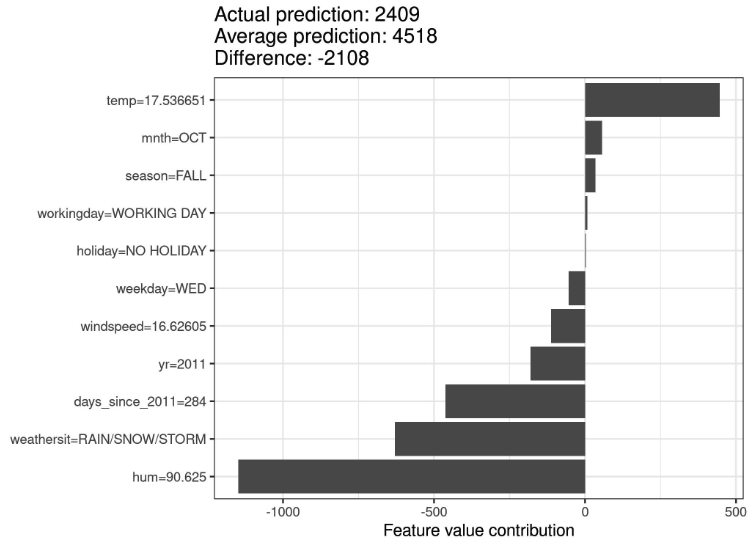

9.5 - Valeurs de Shapley
Une prédiction peut être expliquée en supposant que chaque valeur de caractéristique de l’instance est un « joueur » dans un jeu où la prédiction est le paiement. Les valeurs de Shapley – une méthode issue de la théorie des jeux coalitionnels – nous indiquent comment répartir équitablement le « paiement » entre les fonctionnalités.
Vous recherchez un livre pratique et approfondi sur les valeurs SHAP et Shapley ? J’en ai trouvé un pour vous.
9.5.1 - Idée générale
Supposons le scénario suivant :
Vous avez entraîné un modèle d’apprentissage automatique pour prédire les prix des appartements. Pour un certain appartement, il prévoit 300 000 € et vous devez expliquer cette prévision. L’appartement a une superficie de 50 m 2 , est situé au 2ème étage, dispose d’un parc à proximité et les chats sont interdits :

La prévision moyenne pour tous les appartements est de 310 000 €. Dans quelle mesure chaque valeur de caractéristique a-t-elle contribué à la prédiction par rapport à la prédiction moyenne ?
La réponse est simple pour les modèles de régression linéaire. L’effet de chaque fonctionnalité est le poids de la fonctionnalité multiplié par la valeur de la fonctionnalité. Cela ne fonctionne qu’en raison de la linéarité du modèle. Pour les modèles plus complexes, nous avons besoin d’une solution différente. Par exemple, LIME propose des modèles locaux pour estimer les effets. Une autre solution vient de la théorie des jeux coopératifs : la valeur de Shapley, inventée par Shapley (1953)1, est une méthode permettant d’attribuer des paiements aux joueurs en fonction de leur contribution au paiement total. Les joueurs coopèrent au sein d’une coalition et tirent un certain profit de cette coopération.
Joueurs? Jeu? Paiement ? Quel est le lien avec les prédictions et l’interprétabilité de l’apprentissage automatique ? Le « jeu » est la tâche de prédiction pour une seule instance de l’ensemble de données. Le « gain » est la prédiction réelle pour cette instance moins la prédiction moyenne pour toutes les instances. Les « joueurs » sont les valeurs des caractéristiques de l’instance qui collaborent pour recevoir le gain (= prédire une certaine valeur). Dans notre exemple d’appartement, les valeurs de caractéristique park-nearby, cat-banned et area-50 ont floor-2nd travaillé ensemble pour atteindre la prédiction de 300 000 €. Notre objectif est d’expliquer l’écart entre la prédiction réelle (300 000 €) et la prédiction moyenne (310 000 €) : un écart de -10 000 €.
La réponse pourrait être : les park-nearby 30 000 € cotisés ; area-50 contribué 10 000 € ; floor-2nd cotisé 0 € ; cat-banned apporté -50 000 €. Les cotisations s’élèvent à -10 000 €, la prévision finale moins le prix moyen prévisionnel de l’appartement.
Comment calculons-nous la valeur de Shapley pour une caractéristique ?
La valeur de Shapley est la contribution marginale moyenne d’une valeur de caractéristique dans toutes les coalitions possibles. Tout est clair maintenant ?
Dans la figure suivante, nous évaluons la contribution de la cat-banned valeur de la caractéristique lorsqu’elle est ajoutée à une coalition de park-nearby et area-50. Nous simulons cela uniquement park-nearby, cat-banned et area-50 sont une coalition en tirant au hasard un autre appartement à partir des données et en utilisant sa valeur pour la caractéristique d’étage La valeur floor-2nd a été remplacée par celle tirée au hasard floor-1st. On prédit ensuite le prix de l’appartement avec cette combinaison (310 000 €). Dans un deuxième temps, nous retirons cat-bannedde la coalition en la remplaçant par une valeur aléatoire de la caractéristique chat autorisé/banni de l’appartement tiré au sort. Dans l’exemple, c’était cat-allowed, mais cela aurait pu être cat-banned à nouveau. Nous prévoyons le prix de l’appartement pour la coalition des park-nearby et area-50 (320 000 €). La contribution de cat-banned était de 310 000 € - 320 000 € = -10 000 €. Cette estimation dépend des valeurs de l’appartement tiré au hasard qui a servi de « donneur » pour les valeurs des caractéristiques du chat et de l’étage. Nous obtiendrons de meilleures estimations si nous répétons cette étape d’échantillonnage et faisons la moyenne des contributions.

park-nearby et area-50.Nous répétons ce calcul pour toutes les coalitions possibles. La valeur de Shapley est la moyenne de toutes les contributions marginales à toutes les coalitions possibles. Le temps de calcul augmente de façon exponentielle avec le nombre de fonctionnalités. Une solution pour conserver un temps de calcul gérable consiste à calculer les contributions pour seulement quelques échantillons des coalitions possibles.
La figure suivante montre toutes les coalitions de valeurs de caractéristiques nécessaires pour déterminer la valeur de Shapley pour cat-banned. La première ligne montre la coalition sans aucune valeur de caractéristique. Les deuxième, troisième et quatrième lignes montrent différentes coalitions avec une taille croissante, séparées par « | ». Au total, les coalitions suivantes sont possibles :
No feature valuespark-nearbyarea-50floor-2ndpark-nearby+area-50park-nearby+floor-2ndarea-50+floor-2ndpark-nearby+area-50+floor-2nd
Pour chacune de ces coalitions, nous calculons le prix prévu de l’appartement avec et sans la valeur caractéristique cat-banned et prenons la différence pour obtenir la contribution marginale. La valeur Shapley est la moyenne (pondérée) des contributions marginales. Nous remplaçons les valeurs des caractéristiques qui ne font pas partie d’une coalition par des valeurs de caractéristiques aléatoires de l’ensemble de données d’appartement pour obtenir une prédiction du modèle d’apprentissage automatique.

cat-banned valeur de la caractéristique.Si nous estimons les valeurs de Shapley pour toutes les valeurs de caractéristiques, nous obtenons la distribution complète de la prédiction (moins la moyenne) parmi les valeurs de caractéristiques.
9.5.2 - Exemples et interprétation
L’interprétation de la valeur de Shapley pour la valeur de caractéristique \(j\) est la suivante : la valeur de la \(j^{ième}\) caractéristique apportée \(\phi_j\) à la prédiction de cette instance particulière par rapport à la prédiction moyenne pour l’ensemble de données.
La valeur de Shapley fonctionne à la fois pour la classification (si nous avons affaire à des probabilités) et pour la régression.
Nous utilisons la valeur de Shapley pour analyser les prédictions d’un modèle forestier aléatoire prédisant le cancer du col de l’utérus :

Pour l’ensemble de données de location de vélos, nous formons également une forêt aléatoire pour prédire le nombre de vélos loués pour une journée, en fonction des informations météorologiques et du calendrier. Les explications créées pour la prédiction aléatoire de la forêt d’un jour particulier :

Attention à interpréter correctement la valeur de Shapley : la valeur de Shapley est la contribution moyenne d’une valeur de caractéristique à la prédiction dans différentes coalitions. La valeur de Shapley n’est PAS la différence de prédiction lorsque nous supprimerions la fonctionnalité du modèle.
9.5.3 - La valeur Shapley en détail
Cette section approfondit la définition et le calcul de la valeur de Shapley pour le lecteur curieux. Sautez cette section et allez directement à « Avantages et inconvénients » si les détails techniques ne vous intéressent pas.
Nous nous intéressons à la manière dont chaque fonctionnalité affecte la prédiction d’un point de données. Dans un modèle linéaire, il est facile de calculer les effets individuels. Voici à quoi ressemble une prédiction de modèle linéaire pour une instance de données :
\[\hat{f}(x)=\beta_0+\beta_{1}x_{1}+\ldots+\beta_{p}x_{p}\]
où \(x\) est l’instance pour laquelle nous voulons calculer les contributions. Chaque \(x_j\) est une valeur de caractéristique, avec \(j = 1, \dots, p\). Le \(\beta_j\) est le poids correspondant à la caractéristique \(j\).
La contribution \(\phi_j\) de la \(j^{ème}\) fonctionnalité sur la prédiction \(\hat{f}(x)\) est:
\[\phi_j(\hat{f})=\beta_{j}x_j-E(\beta_{j}X_{j})=\beta_{j}x_j-\beta_{j}E(X_{j})\]
où \(E(\beta_jX_{j})\) est l’estimation de l’effet moyen pour la caractéristique j. La contribution est la différence entre l’effet caractéristique moins l’effet moyen. Bon! Nous savons désormais dans quelle mesure chaque fonctionnalité a contribué à la prédiction. Si nous additionnons toutes les contributions aux fonctionnalités pour une instance, le résultat est le suivant :
\(\begin{align*}\sum_{j=1}^{p}\phi_j(\hat{f})=&\sum_{j=1}^p(\beta_{j}x_j-E(\beta_{j}X_{j}))\\=&(\beta_0+\sum_{j=1}^p\beta_{j}x_j)-(\beta_0+\sum_{j=1}^{p}E(\beta_{j}X_{j}))\\=&\hat{f}(x)-E(\hat{f}(X))\end{align*}\)
Il s’agit de la valeur prédite pour le point de données \(x\) moins la valeur prédite moyenne. Les contributions aux fonctionnalités peuvent être négatives.
Pouvons-nous faire la même chose pour n’importe quel type de modèle ? Ce serait formidable d’avoir cela comme un outil indépendant du modèle. Étant donné que nous n’avons généralement pas de poids similaires dans d’autres types de modèles, nous avons besoin d’une solution différente.
L’aide vient d’endroits inattendus : la théorie des jeux coopératifs. La valeur Shapley est une solution permettant de calculer les contributions de fonctionnalités pour des prédictions uniques pour n’importe quel modèle d’apprentissage automatique.
9.5.3.1 - La valeur Shapley
La valeur Shapley est définie via une fonction de valeur \(val\) des joueurs en \(S\).
La valeur Shapley d’une valeur de caractéristique est sa contribution au paiement, pondérée et additionnée sur toutes les combinaisons possibles de valeurs de caractéristique :
\[\phi_j(val)=\sum_{S\subseteq\{1,\ldots,p\} \backslash \{j\}}\frac{|S|!\left(p-|S|-1\right)!}{p!}\left(val\left(S\cup\{j\}\right)-val(S)\right)\]
où \(S\) est un sous-ensemble des fonctionnalités utilisées dans le modèle, \(x\) est le vecteur des valeurs des fonctionnalités de l’instance à expliquer et \(p\) le nombre de fonctionnalités. \(val_x(S)\) est la prédiction des valeurs de caractéristiques de l’ensemble \(S\) qui sont marginalisées par rapport aux caractéristiques qui ne sont pas incluses dans l’ensemble \(S\) :
\[val_{x}(S)=\int\hat{f}(x_{1},\ldots,x_{p})d\mathbb{P}_{x\notin{}S}-E_X(\hat{f}(X))\]
Vous effectuez en fait plusieurs intégrations pour chaque fonctionnalité qui n’est pas contenue \(S\). Un exemple concret : Le modèle d’apprentissage automatique fonctionne avec 4 fonctionnalités \(x1\), \(x2\), \(x3\) et \(x4\) et nous évaluons la prédiction pour la coalition \(S\) composée des valeurs de fonctionnalités \(x1\) et \(x3\) :
\[val_{x}(S)=val_{x}(\{1,3\})=\int_{\mathbb{R}}\int_{\mathbb{R}}\hat{f}(x_{1},X_{2},x_{3},X_{4})d\mathbb{P}_{X_2X_4}-E_X(\hat{f}(X))\]
Cela ressemble aux contributions de fonctionnalités dans le modèle linéaire !
Ne vous laissez pas tromper par les nombreuses utilisations du mot « valeur » : la valeur de caractéristique est la valeur numérique ou catégorielle d’une caractéristique et d’une instance ; la valeur de Shapley est la contribution des caractéristiques à la prédiction ; la fonction de valeur est la fonction de paiement pour les coalitions de joueurs (valeurs de caractéristiques).
La valeur Shapley est la seule méthode d’attribution qui satisfait aux propriétés Efficacité, Symétrie, Factice et Additivité, qui, ensemble, peuvent être considérées comme une définition d’un paiement équitable.
Efficacité : Les contributions des fonctionnalités doivent correspondre à la différence de prédiction pour x et à la moyenne.
\[\sum\nolimits_{j=1}^p\phi_j=\hat{f}(x)-E_X(\hat{f}(X))\]
Symétrie : Les contributions de deux valeurs de caractéristiques j et k devraient être les mêmes si elles contribuent également à toutes les coalitions possibles. Si
\[val(S \cup \{j\})=val(S\cup\{k\})\]
pour tout
\[S\subseteq\{1,\ldots, p\} \backslash \{j,k\}\]
alors
\[\phi_j = \phi_{k}\]
Factice : Une caractéristique j qui ne modifie pas la valeur prédite – quelle que soit la coalition de valeurs de caractéristiques à laquelle elle est ajoutée – devrait avoir une valeur Shapley de 0. Si
\[val(S\cup\{j\})=val(S)\]
pour tout
\[S\subseteq\{1,\ldots,p\}\]
alors
\[\phi_j=0\]
Additivité : Pour un jeu avec des gains combinés val+val + les valeurs Shapley respectives sont les suivantes :
\[\phi_j + \phi_j^{+}\]
Supposons que vous ayez entraîné une forêt aléatoire, ce qui signifie que la prédiction est une moyenne de plusieurs arbres de décision. La propriété Additivité garantit que pour une valeur de caractéristique, vous pouvez calculer la valeur Shapley pour chaque arbre individuellement, faire la moyenne et obtenir la valeur Shapley pour la valeur de caractéristique de la forêt aléatoire.
9.5.3.2 - Intuitions
Une manière intuitive de comprendre la valeur de Shapley est l’illustration suivante : Les valeurs de caractéristique entrent dans une pièce dans un ordre aléatoire. Toutes les valeurs caractéristiques de la salle participent au jeu (= contribuent à la prédiction). La valeur Shapley d’une valeur de caractéristique est le changement moyen de la prédiction que la coalition déjà présente dans la salle reçoit lorsque la valeur de caractéristique la rejoint.
9.5.3.3 - Estimation de la valeur de Shapley
Toutes les coalitions (ensembles) possibles de valeurs de caractéristiques doivent être évaluées avec et sans la j-ième caractéristique pour calculer la valeur exacte de Shapley. Pour plusieurs fonctionnalités, la solution exacte à ce problème devient problématique à mesure que le nombre de coalitions possibles augmente de façon exponentielle à mesure que davantage de fonctionnalités sont ajoutées. Strumbelj et coll. (2014)2 proposent une approximation avec échantillonnage de Monte-Carlo :
\[\hat{\phi}_{j}=\frac{1}{M}\sum_{m=1}^M\left(\hat{f}(x^{m}_{+j})-\hat{f}(x^{m}_{-j})\right)\]
où \(\hat{f}(x^{m}_{+j})\) est la prédiction pour \(x\), mais avec un nombre aléatoire de valeurs de caractéristiques remplacées par des valeurs de caractéristiques provenant d’un point de données aléatoire \(z\), à l’exception de la valeur respective de la caractéristique \(j\). Le vecteur \(x^{m}_{-j}\) est presque identique à \(x^{m}_{+j}\), mais la valeur \(x_j^{m}\) est également tiré du \(z\) échantillonné. Chacune de ces nouvelles instances \(M\) est une sorte de « Monstre de Frankenstein » assemblé à partir de deux instances. Notez que dans l’algorithme suivant, l’ordre des entités n’est pas réellement modifié : chaque entité reste à la même position vectorielle lorsqu’elle est transmise à la fonction de prédiction. L’ordre n’est utilisé ici que comme « astuce » : en donnant un nouvel ordre aux fonctionnalités, nous obtenons un mécanisme aléatoire qui nous aide à composer le « Monstre de Frankenstein ». Pour les fonctionnalités qui apparaissent à gauche de la fonctionnalité \(x_j\), nous prenons les valeurs des observations originales, et pour les caractéristiques de droite, nous prenons les valeurs d’une instance aléatoire.
Estimation Shapley approximative pour une valeur de caractéristique unique : - Sortie : valeur Shapley pour la valeur de la \(j^{ème}\) fonctionnalité - Obligatoire : nombre d’itérations \(M\), instance d’intérêt \(x\), index de fonctionnalités \(j\), matrice de données \(X\) et modèle d’apprentissage automatique \(f\) - Pour tout \(m = 1, \dots, M\) : - Dessinez une instance aléatoire \(z\) à partir de la matrice de données \(X\) - Choisissez une permutation aléatoire des valeurs des caractéristiques - Instance de commande \(x\) : \(x_o=(x_{(1)},\ldots,x_{(j)},\ldots,x_{(p)})\) - Instance de commande \(z\) : \(z_o=(z_{(1)},\ldots,z_{(j)},\ldots,z_{(p)})\) - Construire deux nouvelles instances - Avec \(j\) : \(x_{+j}=(x_{(1)},\ldots,x_{(j-1)},x_{(j)},z_{(j+1)},\ldots,z_{(p)})\) - Sans \(j\) : \(x_{-j}=(x_{(1)},\ldots,x_{(j-1)},z_{(j)},z_{(j+1)},\ldots,z_{(p)})\) - Calculer la contribution marginale : \(\phi_j^{m}=\hat{f}(x_{+j})-\hat{f}(x_{-j})\) - Calculez la valeur de Shapley comme moyenne : \(\phi_j(x)=\frac{1}{M}\sum_{m=1}^M\phi_j^{m}\)
Tout d’abord, sélectionnez une instance d’intérêt \(x\), une fonctionnalité \(j\) et le nombre d’itérations \(M\). Pour chaque itération, une instance aléatoire \(z\) est sélectionnée à partir des données et un ordre aléatoire des fonctionnalités est généré. Deux nouvelles instances sont créées en combinant les valeurs de l’instance d’intérêt \(x\) et de l’échantillon \(z\). L’exemple \(x_{+j}\) est l’instance qui nous intéresse, mais toutes les valeurs dans l’ordre après la caractéristique \(j\) sont remplacées par les valeurs de caractéristiques de l’échantillon z. L’exemple \(x_{-j}\) est le même que \(x_{+j}\), mais en plus la fonctionnalité \(j\) est remplacée par la valeur de la fonctionnalité \(j\) de l’échantillon \(z\). La différence entre la prédiction et la boîte noire est calculée :
\[\phi_j^{m}=\hat{f}(x^m_{+j})-\hat{f}(x^m_{-j})\]
Toutes ces différences sont moyennées et donnent :
\[\phi_j(x)=\frac{1}{M}\sum_{m=1}^M\phi_j^{m}\]
La moyenne pondère implicitement les échantillons selon la distribution de probabilité de X.
La procédure doit être répétée pour chacune des caractéristiques afin d’obtenir toutes les valeurs de Shapley.
9.5.4 - Avantages
La différence entre la prédiction et la prédiction moyenne est équitablement répartie entre les valeurs de caractéristiques de l’instance – la propriété Efficacité des valeurs de Shapley. Cette propriété distingue la valeur Shapley des autres méthodes telles que LIME . LIME ne garantit pas que la prédiction soit équitablement répartie entre les fonctionnalités. La valeur de Shapley pourrait être la seule méthode permettant de fournir une explication complète. Dans les situations où la loi exige l’explicabilité – comme le « droit à des explications » de l’UE – la valeur Shapley pourrait être la seule méthode juridiquement conforme, car elle repose sur une théorie solide et répartit équitablement les effets. Je ne suis pas avocat, cela reflète donc uniquement mon intuition concernant les exigences.
La valeur de Shapley permet des explications contrastées. Au lieu de comparer une prédiction à la prédiction moyenne de l’ensemble de données, vous pouvez la comparer à un sous-ensemble ou même à un seul point de données. Cette contrastivité est également quelque chose que les modèles locaux comme LIME ne possèdent pas.
La valeur de Shapley est la seule méthode d’explication dotée d’une théorie solide. Les axiomes – efficacité, symétrie, muette, additivité – donnent à l’explication une base raisonnable. Des méthodes telles que LIME supposent un comportement linéaire du modèle d’apprentissage automatique localement, mais il n’existe aucune théorie expliquant pourquoi cela devrait fonctionner.
Il est époustouflant d’expliquer une prédiction comme un jeu joué par les valeurs des caractéristiques.
9.5.5 - Inconvénients
La valeur de Shapley nécessite beaucoup de temps de calcul. Dans \(99,9%\) des problèmes du monde réel, seule la solution approximative est réalisable. Un calcul exact de la valeur de Shapley est coûteux en termes de calcul car il existe 2 k coalitions possibles de valeurs de caractéristiques et « l’absence » d’une caractéristique doit être simulée en tirant des instances aléatoires, ce qui augmente la variance pour l’estimation des valeurs de Shapley. Le nombre exponentiel des coalitions est traité en échantillonnant les coalitions et en limitant le nombre d’itérations M. Diminuer M réduit le temps de calcul, mais augmente la variance de la valeur de Shapley. Il n’existe pas de bonne règle empirique concernant le nombre d’itérations M. M doit être suffisamment grand pour estimer avec précision les valeurs de Shapley, mais suffisamment petit pour terminer le calcul dans un temps raisonnable. Il devrait être possible de choisir M en fonction des limites de Chernoff, mais je n’ai vu aucun article sur ce faisant pour les valeurs de Shapley pour les prédictions d’apprentissage automatique.
La valeur de Shapley peut être mal interprétée. La valeur Shapley d’une valeur de fonctionnalité n’est pas la différence de la valeur prédite après la suppression de la fonctionnalité de la formation du modèle. L’interprétation de la valeur de Shapley est la suivante : étant donné l’ensemble actuel de valeurs de caractéristiques, la contribution d’une valeur de caractéristique à la différence entre la prédiction réelle et la prédiction moyenne est la valeur de Shapley estimée.
La valeur Shapley n’est pas la bonne méthode d’explication si vous recherchez des explications clairsemées (explications contenant peu de fonctionnalités). Les explications créées avec la méthode des valeurs de Shapley utilisent toujours toutes les fonctionnalités. Les humains préfèrent les explications sélectives, telles que celles produites par LIME. LIME pourrait être le meilleur choix pour les explications auxquelles les profanes doivent faire face. Une autre solution est SHAP introduite par Lundberg et Lee (2016)3, qui est basée sur la valeur de Shapley, mais peut également fournir des explications avec peu de fonctionnalités.
La valeur Shapley renvoie une valeur simple par fonctionnalité, mais aucun modèle de prédiction comme LIME. Cela signifie qu’il ne peut pas être utilisé pour faire des déclarations sur les changements de prédiction en fonction des changements dans les entrées, telles que : “Si je devais gagner 300 € de plus par an, ma cote de crédit augmenterait de 5 points.”
Un autre inconvénient est que vous devez accéder aux données si vous souhaitez calculer la valeur Shapley pour une nouvelle instance de données. Il ne suffit pas d’accéder à la fonction de prédiction, car vous avez besoin que les données remplacent des parties de l’instance d’intérêt par des valeurs provenant d’instances de données tirées au hasard. Cela ne peut être évité que si vous pouvez créer des instances de données qui ressemblent à des instances de données réelles mais ne sont pas de véritables instances à partir des données d’entraînement.
Comme beaucoup d’autres méthodes d’interprétation basées sur la permutation, la méthode des valeurs de Shapley souffre de l’inclusion d’instances de données irréalistes lorsque les caractéristiques sont corrélées. Pour simuler l’absence d’une valeur de fonctionnalité dans une coalition, nous marginalisons la fonctionnalité. Ceci est réalisé en échantillonnant les valeurs de la distribution marginale de l’entité. C’est très bien tant que les fonctionnalités sont indépendantes. Lorsque les fonctionnalités sont dépendantes, nous pouvons alors échantillonner des valeurs de fonctionnalités qui n’ont pas de sens pour cette instance. Mais nous les utiliserions pour calculer la valeur Shapley de la fonctionnalité. Une solution pourrait consister à permuter les caractéristiques corrélées ensemble et à obtenir une valeur Shapley mutuelle pour elles. Une autre adaptation est l’échantillonnage conditionnel : les fonctionnalités sont échantillonnées en fonction des fonctionnalités qui font déjà partie de l’équipe. Alors que l’échantillonnage conditionnel résout le problème des points de données irréalistes, un nouveau problème est introduit : les valeurs résultantes ne sont plus les valeurs de Shapley dans notre jeu, car elles violent l’axiome de symétrie, comme l’ont découvert Sundararajan et al. (2019)4 et discuté plus en détail par Janzing et al. (2020)5.
9.5.6 - Logiciels et alternatives
Les valeurs Shapley sont implémentées dans les packages iml et fastshap pour R. Dans Julia, vous pouvez utiliser Shapley.jl.
SHAP, une méthode alternative d’estimation des valeurs de Shapley, est présentée dans le chapitre suivant.
Une autre approche est appelée breakDown, qui est implémentée dans le breakDown package R6. BreakDown affiche également les contributions de chaque fonctionnalité à la prédiction, mais les calcule étape par étape. Réutilisons l’analogie du jeu : nous commençons avec une équipe vide, ajoutons la valeur de fonctionnalité qui contribuerait le plus à la prédiction et itérons jusqu’à ce que toutes les valeurs de fonctionnalité soient ajoutées. La contribution de chaque valeur de fonctionnalité dépend des valeurs de fonctionnalité respectives qui sont déjà dans « l’équipe », ce qui est le gros inconvénient de la méthode breakDown. Elle est plus rapide que la méthode des valeurs de Shapley et pour les modèles sans interactions, les résultats sont les mêmes.
Notes de bas de page
Shapley, Lloyd S. “A value for n-person games.” Contributions to the Theory of Games 2.28 (1953): 307-317.↩︎
Štrumbelj, Erik, and Igor Kononenko. “Explaining prediction models and individual predictions with feature contributions.” Knowledge and information systems 41.3 (2014): 647-665.↩︎
Lundberg, Scott M., and Su-In Lee. “A unified approach to interpreting model predictions.” Advances in Neural Information Processing Systems (2017).↩︎
Sundararajan, Mukund, and Amir Najmi. “The many Shapley values for model explanation.” arXiv preprint arXiv:1908.08474 (2019).↩︎
Janzing, Dominik, Lenon Minorics, and Patrick Blöbaum. “Feature relevance quantification in explainable AI: A causal problem.” International Conference on Artificial Intelligence and Statistics. PMLR (2020).↩︎
Staniak, Mateusz, and Przemyslaw Biecek. “Explanations of model predictions with live and breakDown packages.” arXiv preprint arXiv:1804.01955 (2018).↩︎